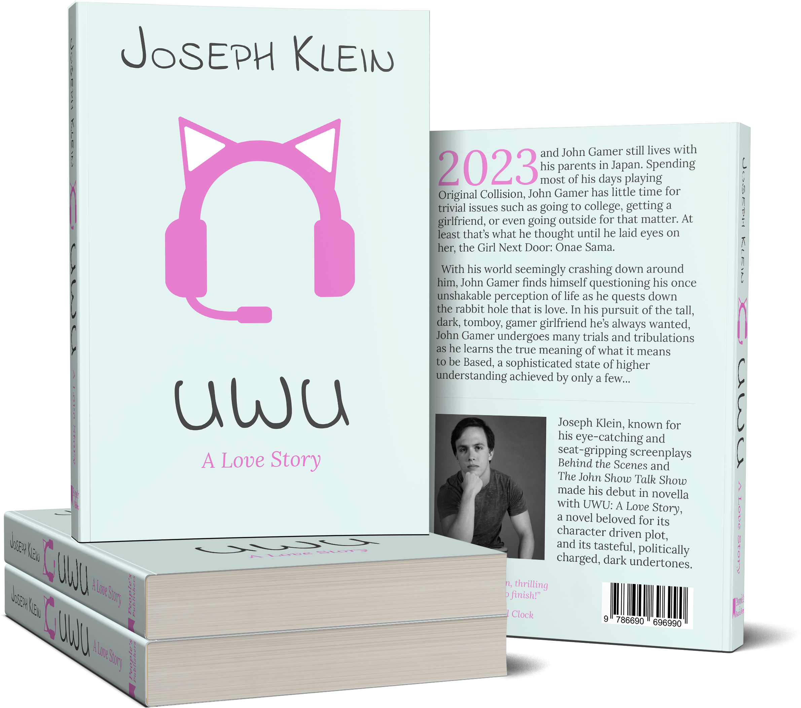
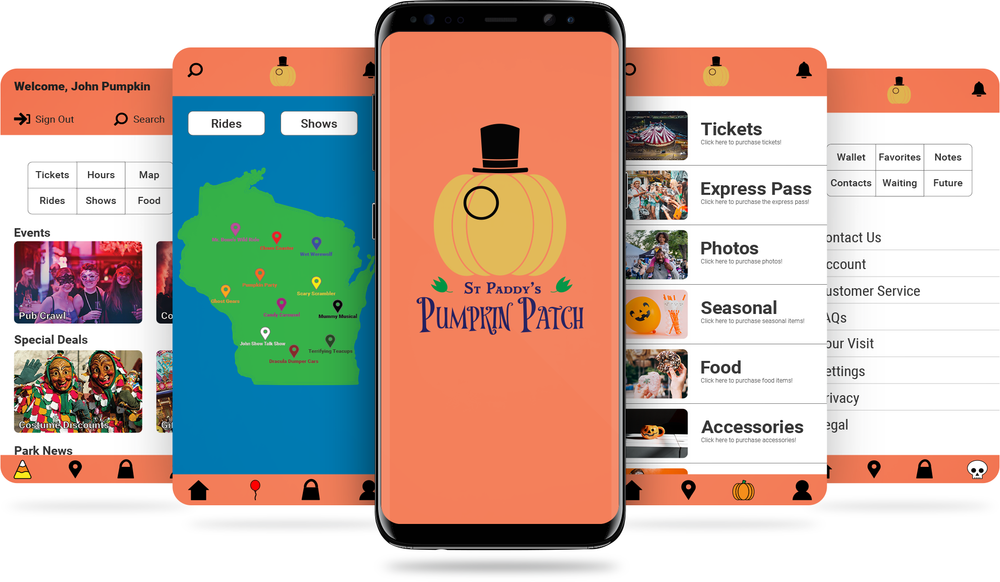

Page Design
UWU: A Love Story
Objective
The client requested a book design to be fully formatted and print ready containing complete cover designs for the front, back, and spine as well as complete copyright, acknowledgments, table of contents pages, and basic formatting for the chapters. Paragraph styles, character styles, and vector imagery were designed specifically for this book design to give the layout the unique tone desired by the client. The client requested swatches be selected in PANTONE to ensure consistency.
Challenges
The notable challenge was the amount of information requested to be included in the finished design by the client to give the book a unique tone. This challenge was overcome by utilizing custom paragraph and character styles to aid in text organization as well as by strategically using color and imagery to evoke specific emotions. The light pinks and blues are common colors usually associated with girl gaming culture, and the custom vector headset is commonly associated with E-girl game streaming.
Nature's Way
Objective
The client requested a complete trifold design for a business brochure. The design was to include complete text, be fully formatted, and be print ready. The client specifically requested both bitmap images and vector images be incorporated into the design to aid in expressing the intended tone of voice to potential customers. The finished design was to be consistent in its theme and message for branding purposes. Text was meant to highlight the best qualities of and services offered by the company.
Challenges
The most notable challenge was keeping the theme of the design consistent with the photographs, icons, and colors used. The intended tone of voice was to be expressed by the design was to be a mix of professionalism with naturalism to create an inviting brochure that still showcased the legitimacy of the business. This was achieved by strategically using neutral colors. The green represents tranquility and the white sincerity. The icons and photos were chosen with those moods in mind.
People's Publishers

Objective
The client requested a single-page flyer design to be fully formatted and made print ready for a business. The flyer was to incorporate a business logo for branding purposes while making use of photography and iconography to express the message intended by the business; brand colors were to be incorporated into the design as well for brand consistency. Text was to be complete and informative of the business. The need for the inclusion of photography was heavily emphasized.
Challenges
The most notable challenge was incorporating the text and colors together in a way that communicated the intended message while keeping the design consistent with the brand. This was achieved by using fonts designed to be professional with a sense of playfulness. Alegreya was chosen as the header to catch the eye, yet keep a sense of professionalism, while Raleway was chosen as the body to contrast the boldness of Alegreya. The red represents passion; the yellow wisdom.
St Paddy's Pumpkin Patch
Objective
The client requested a functional prototype for a theme park app be fully designed and production ready. The design was to incorporate the brand logo, name, and colors while providing a functional app for customer service purposes. The app was to be designed as an extension of the theme park and act as a way for customers to interact with the business further, both inside and outside of the park itself. The functionality and interactivity of the design was to be kept the main priority.
Challenges
The most notable challenge was prototyping the interactivity between and within pages of the app. The number of features requested by the client required pages to be primarily designed for functionality without sacrificing form. This was achieved through extensive planning and wire-framing before design production began. Quality of life features were added to aid in customer service and interactivity, such as the quick action menu on the home page that links to frequently visited pages.